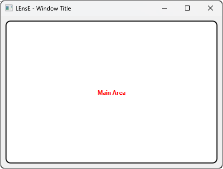

SimpleWidget Example
This section presents a simple widget that can be included in a largest window.
The complete file SimpleWidget.py of this example is in the interface/elements/ directory.
SimpleWidget class
This class inherites from the QWidget class, a container of Qt application. In the initialization function of this new class, the constructor (__init__ function) of the mother class is called (mother class is the QWidget class).
1class SimpleWidget(QWidget):
2 def __init__(self, title='', background_color='#0A3250', text_color='#FFFFFF'):
3 super().__init__(parent=None)
Arguments of the class
This class contains :
a title : corresponding to the text displays in the center of the widget;
a background color;
a text color.
They are defined as argument of the contructor of the class.
CSS Style
To make the interface more visually appealing, it is possible to add CSS elements (recognized by PyQt6).
1style_css = "background-color: "+self.background_color+";"
2style_css+= "border-radius: 10px;"
3style_css+= "border-color: black; border-width: 2px; font: bold 12px; padding: 20px;"
4style_css+= "border-style: solid;"
5style_css+= "color: "+self.text_color+";"
6self.setStyleSheet(style_css)
The CSS style is applied thanks to the setStyleSheet of the QWidget class.
To learn more about CSS Style, you can check this tutorial : Start with CSS.
Graphical objects
1self.layout = QGridLayout()
2self.setLayout(self.layout)
3
4self.title_label = QLabel(self.title)
5style_css = "color: "+self.text_color+";"
6self.title_label.setStyleSheet(style_css)
7self.title_label.setAlignment(Qt.AlignmentFlag.AlignCenter)
8
9self.layout.addWidget(self.title_label, 0, 0)
Test the class
1if __name__ == '__main__':
2 import sys
3 from PyQt6.QtGui import QIcon
4
5 class MyWindow(QMainWindow):
6 def __init__(self):
7 super().__init__()
8 # Define Window title
9 self.setWindowTitle("LEnsE - Window Title")
10 self.setWindowIcon(QIcon('images/IOGS-LEnsE-logo.jpg'))
11 self.setGeometry(50, 50, 1000, 700)
12
13 # Widget to test
14 self.main_area = SimpleWidget(title='Main Area',
15 background_color='white',
16 text_color='red')
17 self.setCentralWidget(self.main_area)
18
19 app = QApplication(sys.argv)
20 main = MyWindow()
21 main.show()
22 sys.exit(app.exec())